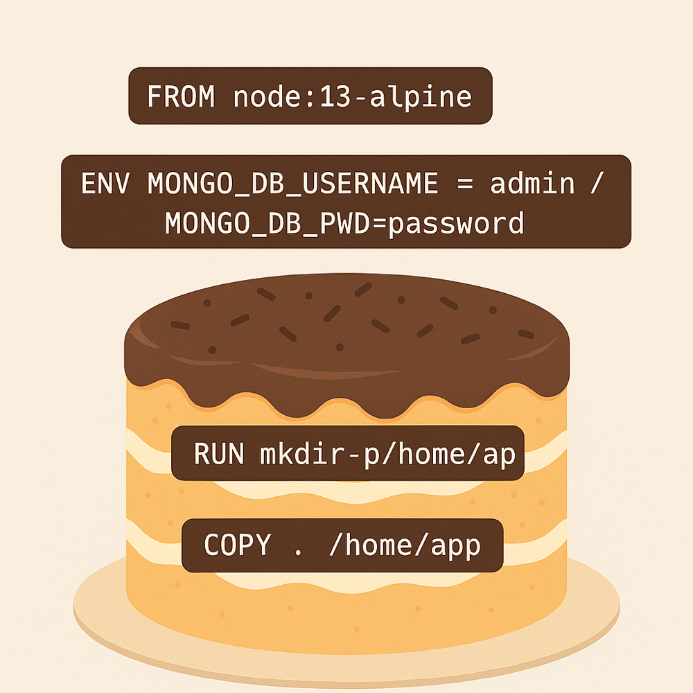

What Docker is all about
Docker packages an application with everything it needs so it can run identically on any machine. Instead of configuring servers by hand, we ship a container image that contains the app, dependencies, and runtime.
A Dockerfile is the recipe for your container image. Every instruction documents how to build the final dish so you can recreate the same environment on any host without guesswork.
Dockerfile as a cake recipe
Picture yourself baking a cake: you gather ingredients, follow the steps, and finish with a reliable dessert. Dockerfiles follow the same pattern.
- The Dockerfile is the recipe you trust
- The base image and files you copy are your ingredients
- RUN, COPY, and ENV are the preparation steps
- The finished cake is the image you can run anywhere
Breaking down a simple Dockerfile
Here is a lightweight Node.js image that loads an app and starts it immediately. Each line mirrors a kitchen move.
FROM node:13-alpine
ENV MONGO_DB_USERNAME=admin \
MONGO_DB_PWD=password
RUN mkdir -p /home/app
COPY . /home/app
CMD ["node", "/home/app/server.js"]FROM node:13-alpineselects the base sponge for the cakeENVsets credentials and knobs, just like preheating the ovenRUN mkdir -p /home/appprepares the mixing bowlCOPY . /home/apppours the batter inCMD ["node", "/home/app/server.js"]is the bake and serve moment

Why the recipe matters
With a Dockerfile, you capture the full build process. Colleagues and automation pipelines can rebuild the same artifact, whether they use macOS, Linux, or a CI runner in the cloud.
- Recreate the environment on demand
- Keep builds repeatable and auditable
- Ship an application that behaves identically everywhere
Multi-stage builds: mixing versus plating
Sometimes the kitchen gets messy. You compile dependencies, transpile assets, and install tooling that is not needed in production. Multi-stage builds split those phases so the final image stays clean.
The first stage gathers heavy equipment to mix the dough. The second stage copies just the ready-to-serve cake into a smaller box.
# Stage 1 - build
FROM node:13-alpine AS build
WORKDIR /home/app
COPY . .
RUN npm install
# Stage 2 - final image
FROM node:13-alpine
WORKDIR /home/app
COPY --from=build /home/app .
CMD ["node", "/home/app/server.js"]By copying only the compiled application from build, the final container avoids dev tools and leftover caches.
- Stage 1 is the noisy prep kitchen
- Stage 2 is the elegant plate you serve
- The result is lighter, faster, and easier to ship
Treat Dockerfiles like family recipes: document every step, keep the kitchen tidy with multi-stage builds, and you will dish out containers that delight every environment.
Bon appétit and happy container cooking!